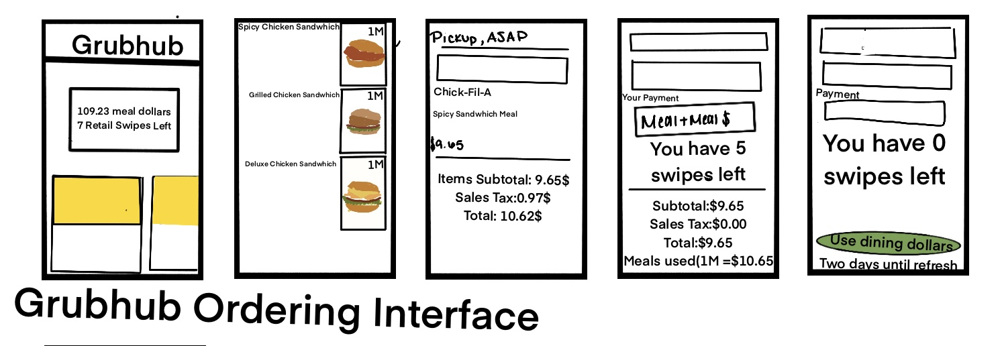

Highlighted projects
Problem Statement

Students at the University of South Carolina struggle to keep track of their retail meal swipes because the balance is only available through a separate app.
Affinity Diagram

This diagram organizes key ideas into clusters to explore different aspects of integrating retail meal swipe tracking into the Grubhub app, including technology, funding, challenges, marketing, and future growth.
Sketches
The three sketches show how retail meal swipes would appear within the Grubhub app. The first sketch shows how the retail swipes will be integrated into placing food orders. The second sketch shows how the retail swipe tracker can be used and how it can help reduce retail swipe waste across campus. The third sketches have potential features that could be implemented.